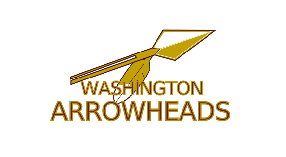
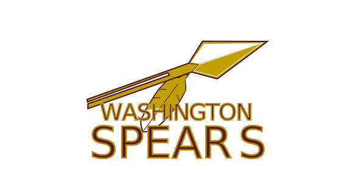
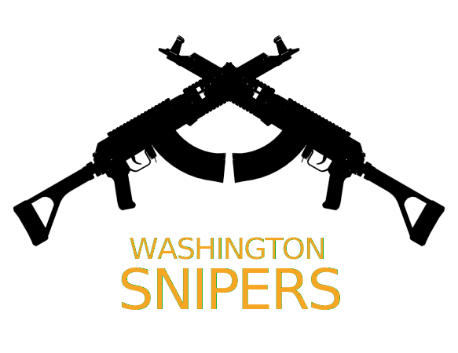
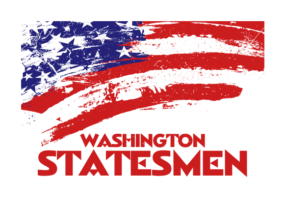

A lot of people are unhappy that the Washington Redskins hanging on to their name despite protests and lawsuits by Native American groups. But not enough fans support changing the name to convince the owners to do anything about it.
The orginal name of the Redskins was Boston Braves. They changed it in 1936 to avoid confusion with the then-Boston Braves baseball team. If the Native American groups are ok with the image of the man with feathers, the simplest solution is for the Redskins to keep their current logo and go back to their original name.
The Piscataway tribe that inhabited the DC metro area was relatively peaceful. They grew corn, hunted and served as mountain guides to European settlers. They also created elaborate fashion. There's not a lot to draw on for a football team, which brought me to focus on the hunting.

If the man with the feathers offends Native American groups, the Redskins can bring back their 1965 logo (modernized here a little) with another Native-American inspired name.

Another one on the theme of Native Americans.

The team can also rebrand entirely. Here's one inspired by the military power in the DC metro area, but also mixing in the idea of rebellion and independent spirit.

Also inspired by the nation's capital, this one focusses on America's strength lying in its democracy. Statesmen have power and command respect. It doesn't hurt that football players refer to distinguished veteran players as elder statemen.
These are only some of the ways we can improve this team's name. I think it's time.